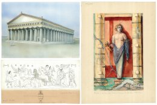

<div class="con10t-page container">
    <div class="con10t-row">
        <div class="con10t-title">
            <h1>The Antiquity in Drawing, Plan and Architectural Survey: Primary
                Documentation of the 19th and 20th centuries at the German Archaeological
                Institute in Rome</h1>
        </div>
        <div class="con10t-sidebar">
            <h3>Related Links</h3>

            <p><a con10t-search-query="catalogPaths:103">go to The Historical Archive</a>
            </p>
            <p><a con10t-search-query="catalogPaths:104">go to The Architectural Archive</a>
            </p>
            <h3>Browse Project Data</h3>

            <h4>Historical Archive</h4>

            <div class="well">
                <p>
                    <con10t-search catalog-id="103"></con10t-search>
                </p>
            </div>

            <h4>Architectural Archive</h4>

            <div class="well">
                <p>
                    <con10t-search catalog-id="104"></con10t-search>
                </p>
            </div>
        </div>
        <div class="con10t-content">
            <p>
                
            </p>
            <p>The archive of <a
                    href="https://new.dainst.org/en/web/guest/standort/-/organization-display/ZI9STUj61zKB/18485?p_auth=pVoG8WvD&amp;p_r_p_1690909578_redirectURL=https%3A%2F%2Fnew.dainst.org%2Fen%2Fstandort%2F-%2Forganization-display%2FZI9STUj61zKB%2F14443%3Fp_r_p_1690909578_redirectURL%3Dhttps%253A%252F%252Fnew.dainst.org%252Fen%252Fweb%252Fguest%252Fstruktur#_LFR_FN__organizationdisplay_WAR_daiportlet_INSTANCE_ZI9STUj61zKB_view_projects"
                    target="_blank">the German Archaeological Institute in Rome</a> preserves,
                among others, two collections of manual drawings: "The Historical Archive"
                consisting of drawings mainly going back to the foundation of the Institute
                in 1829 until the first decades of the 20th century. The other collection,
                "The Architectural Archive", initiated with the reopening of the Institute
                in 1953, contains large-scale graphical documentation created during archaeological
                fieldwork. These drawings show a wide range of monuments such as architectural
                structures, panoramas, layouts and reconstructive plans in addition to
                sheets showing topographical maps and a variety of finds within different
                categories.</p>
            <p>The unique drawings, paintings, plans, sections and sketches of both collections
                depict ancient monuments and objects, many of which are lost, destroyed,
                damaged or altered nowadays, for instance due to restoration or environmental
                impact. Hence, these drawings have not only an artistic value, but rather
                constitute a very important testimony of the illustrated individual objects
                and monuments. At the same time these collections represent a part of the
                history of the archaeological research.</p>
            <p>Within this project, the complete "Historical Archive" and selected parts
                of the "Architectural Archive" will be digitized and catalogued appropriately
                in order to provide a permanent worldwide online access. Via <a href="http://arachne.dainst.org"
                                                                                target="_blank">Arachne</a> and <a
                        href="http://opac.dainst.org/F?" target="_blank">ZENON-DAI</a> the
                digitized material will be scientifically contextualized and virtually
                available on a sustained basis and free of charge. The integration of bibliographical
                meta data, registered for each sheet individually in ZENON-DAI, is carried
                out via an interface in Arachne where the drawings are visualized within
                the <a con10t-page="idaibookbrowser" target="_blank&quot;">iDAI.bookbrowser</a>
                as
                well as the <a href="http://dfg-viewer.de/ueber-das-projekt/" target="_blank&quot;">DFG-viewer</a>.</p>
            <p>The technological processing allows a virtual browsing experience that
                simulates the - until now - locally restricted physical insight, supplemented
                by additional information. The aggregated digital data will be connected
                to the EU initiatives <a href="http://carare.eu" target="_blank">CARARE</a> and
                <a
                        href="http://europeana.eu" target="_blank">Europeana</a>and accessible worldwide via the <a
                        href="http://www.clarosnet.org/XDB/ASP/clarosHome/"
                        target="_blank">CLAROS</a> network.</p>
        </div>
    </div>
</div>